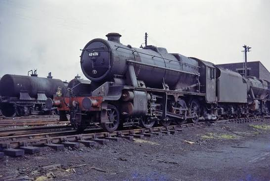

Welcome to Olly's train hub!
Welcome to my little corner of the railway world!
Featured Locomotive
My Featured Locomotive is the LMS Stanier 8F!

Some facts about the locomotive!
Built by the LMS
Designed by William Stanier
Wheel arrangement: 2-8-0
Built primarily for heavy freight
Famous Locomotives!
Flying Scotsman - LNER A3 4464
Mallard - LNER A4 4468
Big Boy - Union Pacific 4014
Rocket - Stepheson's Rocket
City of Turo - GWR 3440
Mallard's Sister locomotive - Sir Nigel Gresley
Daylight - Southern Pacific GS-4 4449
The Great Bear - GWR 111
Adler - germany's first succesful railway loco
C62 2 - Japanese Pacific-class